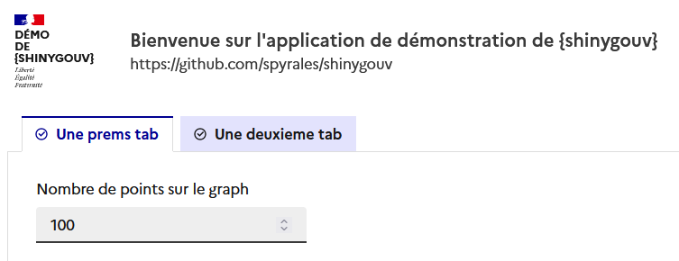

Le package {shinygouv} permet d’utiliser le Système de Design de l'Etat (DSFR) dans vos applications Shiny.
Cela leur donnera ce genre de look :

Il s’installe depuis github :
# install.packages("remotes")
remotes::install_github("spyrales/shinygouv")Le package s’utilise comme {shiny}. Voici un exemple minimaliste pour la partie UI:
library(shiny)
library(shinygouv)
app_ui <- fluidPage_dsfr(
header = header_dsfr(
intitule = c("D\u00e9mo", "de", "{shinygouv}"),
nom_site_service = "Bienvenue sur l\'application de d\u00e9monstration de {shinygouv}",
baseline = "https://github.com/spyrales/shinygouv"
),
title = "Exemple",
fluidRow_dsfr(
column_dsfr(
0,
fileInput_dsfr(inputId = "file1", label = "Ajouter des fichiers", message = "")
)
)
)
shinyApp(
ui = app_ui,
server = function(input, output) {
}
)shinygouv-demo dev, version en cours de developpement
Voir les vignettes à l’intention des développeurs du site de présentation du packages et de ses fonctions
Notez svp qu’un Code de conduite (Contributor Code of Conduct) encadre la participation au projet {shinygouv}.
En contribuant à ce projet, vous acceptez de le respecter.